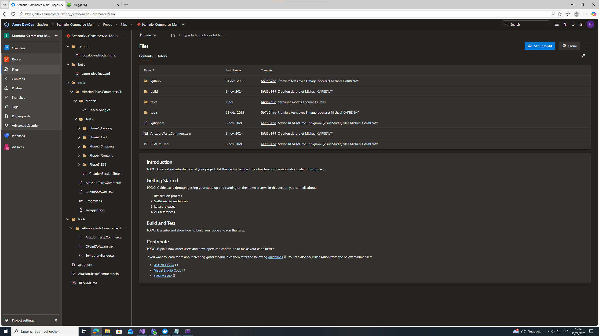
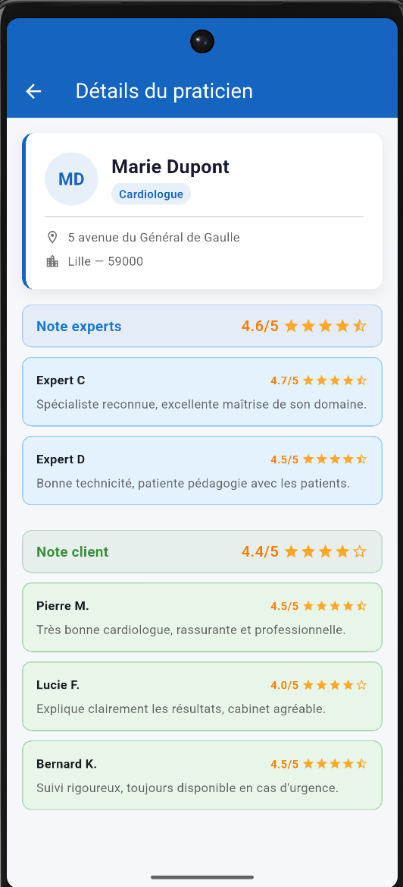
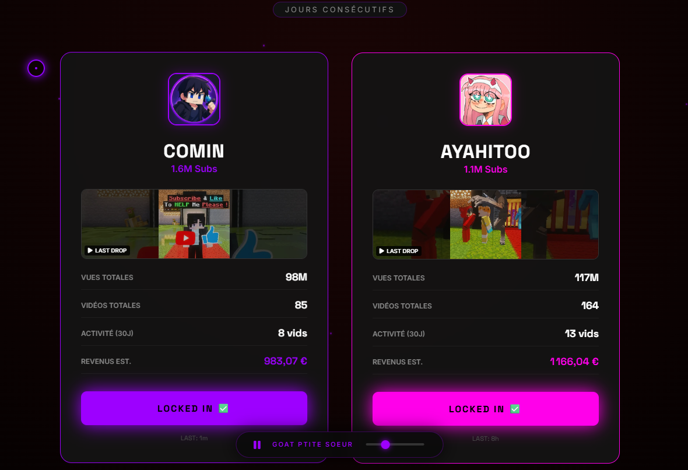

✕
Développeur web & logiciel — BTS SIO option SLAM
Étudiant passionné par le développement d'applications, basé à Quarouble (59). Curieux, autonome, avec déjà 2 stages chez Altazion / Creo Ignem.
Je m'appelle Thomas Comin, j'ai 19 ans et je suis en 2ème année de BTS SIO option SLAM au lycée Henri Wallon à Valenciennes.
Passionné par le développement logiciel, j'ai effectué mes deux stages chez Altazion (Creo Ignem), une entreprise spécialisée dans les outils de commerce digital pour de grands clients comme IKEA, King Jouet ou MR Bricolage. Ces expériences m'ont permis de travailler sur des projets professionnels réels avec des technologies comme C#, Docker, Redis et les tests d'intégration.
Avant le BTS, j'ai fait un Bac Pro SN (Systèmes Numériques) pendant 3 ans au lycée Pierre Joseph Fontaine à Anzin, ce qui m'a donné des bases solides en systèmes et réseaux.
J'aime apprendre en pratiquant, relever des défis techniques, et comprendre en profondeur les projets sur lesquels je travaille.
Altazion (anciennement Creo Ignem, fondée en 2004) développe des outils e-commerce pour de grandes enseignes : IKEA, King Jouet, MR Bricolage.
Ma mission était de créer des programmes automatiques qui vérifient que chaque fonctionnalité de la boutique marche — recherche produit, panier, code promo, livraison, commande complète. J'ai travaillé avec Docker pour recréer l'environnement et collaboré avec mon tuteur Michael CARBENAY via Teams.




Premier stage chez Altazion. J'ai travaillé sur un module de gestion de stocks interne en C#, avec Redis et Docker.
Développement de fonctionnalités pour consulter, ajouter, modifier et supprimer des données de stock (entrepôts, articles, références) + tests automatiques sur chaque fonctionnalité.
GSB est un laboratoire fictif utilisé comme fil rouge. Notre groupe CVL gère la région Centre-Val de Loire. On a monté une infrastructure réseau complète et développé plusieurs applications pour gérer les praticiens.
Application Windows permettant aux praticiens de demander des congés. Un responsable RH peut accepter ou refuser. L'app vérifie automatiquement le solde restant.
Site web pour le service RH pour consulter et gérer les salaires. Calcul automatique selon l'ancienneté, sur une grille de 13 niveaux (4 633 € à 9 368 €).
.png)
.png)

Application mobile pour consulter et comparer les praticiens selon leurs notes clients et experts (sur 5).


Création de ce portfolio pour présenter mon parcours, mes stages et mes réalisations dans le cadre de la préparation à l'épreuve E5. Hébergé gratuitement sur GitHub Pages.
En parallèle de ma formation, j'ai développé un site web personnel qui se connecte à l'API publique YouTube pour suivre en temps réel les statistiques de ma chaîne : abonnés, vues totales, activité récente, revenus estimés.
Ce projet m'a permis de pratiquer la consommation d'une API externe, la gestion de données dynamiques et l'affichage d'un dashboard interactif. En parallèle, j'ai créé ma micro-entreprise en tant qu'auto-entrepreneur suite à la monétisation de ma chaîne, ce qui m'a appris à gérer les aspects administratifs d'une activité professionnelle.

Une question, une opportunité de stage ou d'alternance ? Je suis disponible et ouvert à toute discussion. N'hésitez pas à me contacter !